Kochi1 Redesign
Kochi1 brings metro tickets, water metro, feeder buses, and smart card payments into one unified ecosystem. However, real commuter research revealed a critical gap between feature offerings and everyday usability.
.png)
About the Kochi1 App
Kochi1 is an all-in-one mobility and payment app developed by Kochi Metro Rail Limited (KMRL) in partnership with Axis Bank, designed to simplify everyday travel across Kochi. Commuters can book metro tickets, plan journeys, check real-time transit information, and manage their Kochi1 Smart Card from a single platform.
The app brings together smart card recharge, balance management, QR ticketing, routes, fares, and nearby transit information, serving as the central digital touchpoint for Kochi’s public transport network.
A Strong Product, but a Disconnected Experience
While Kochi1 brings transit, payments, and mobility together, our fieldwork uncovered an adoption paradox. Despite widespread awareness of the app across the city, only a fraction of commuters rely on it for their daily trips.
Real Commuter Frustrations
Despite being an established platform for Kochi1 users, the app still falls short in everyday use. Recent app store reviews reveal recurring frustrations, usability issues, and gaps in the experience:
Viral Reel & Commuter Reactions
Reactions and comments from viral Instagram reels show how ticket turnstile anxiety, scanner delays, and navigation confusion impact daily transit habits:
Competitor Analysis
Evaluating regional and global multimodal transit platforms to benchmark ticketing speed, information clarity, and operator integration:
Core Strength
- Multimodal mobility across bus, metro, rail & ferry
- Map-based route planning
- Direct card recharge & balance
Where It Works Well
- Unified ticketing under one roof
- Detailed station information
- Fast single-trip QR generation
Where It Fails
- Complex ecosystem with multiple operators
- Overloaded feature set without hierarchy
- Limited clarity on multimodal connections
Heuristic Evaluation
Evaluating the existing Kochi1 transit interface against Nielsen’s usability heuristics to identify fundamental interface breakdowns, feedback gaps, and navigational clutter across core flows:
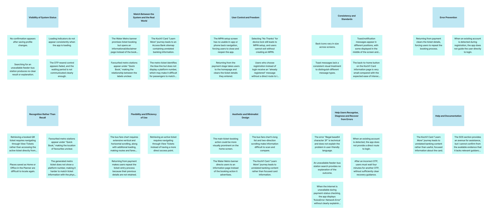
Survey & Commuter Insights
Conducted surveys with 80+ active commuters and 5+ qualitative deep-dive interviews across Kochi Metro stations (Aluva, Edappally, MG Road, Maharaja’s College, Vyttila Mobility Hub).
Key Research Finding: High digital comfort does not translate into a good Kochi1 experience. Even tech-savvy students and corporate employees found the dual "Planner" and "Book Tickets" taxonomy confusing under time constraints.
Three Real Commuter Archetypes
To anchor design decisions in authentic human contexts, we synthesized research findings into three distinct personas, each presented step-by-step through their transit scenario, illustrated storyboard, portrait persona profile, and 4-quadrant empathy map:
Rahul Ajith · 24, Graduate Trainee
Scenario · The Rush-Hour Turnstile Rush
Rahul is rushing to meet a friend at MG Road. He purchases a QR ticket on Kochi1 while walking into the station. At the gate, the scanner fails to read his QR code twice. Anxious and embarrassed with a queue forming behind him, he steps aside unsure if his ticket expired or if the app froze.
Storyboard · Commute Journey
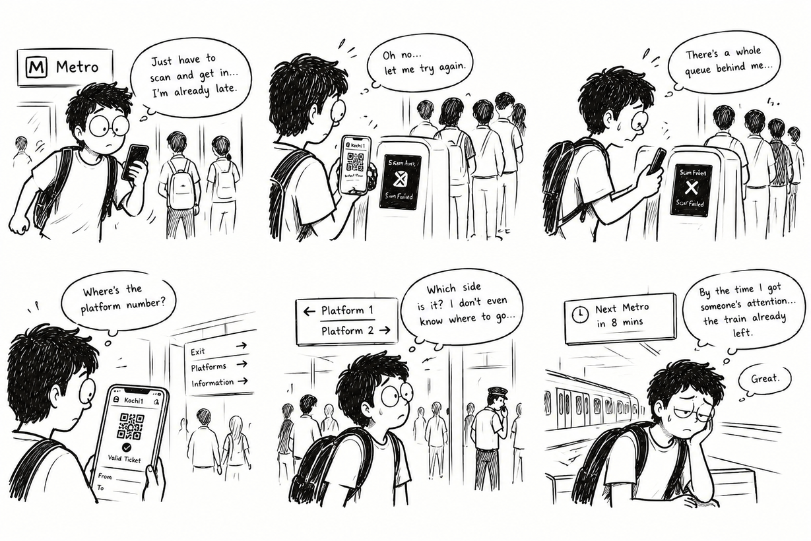
Persona Profile
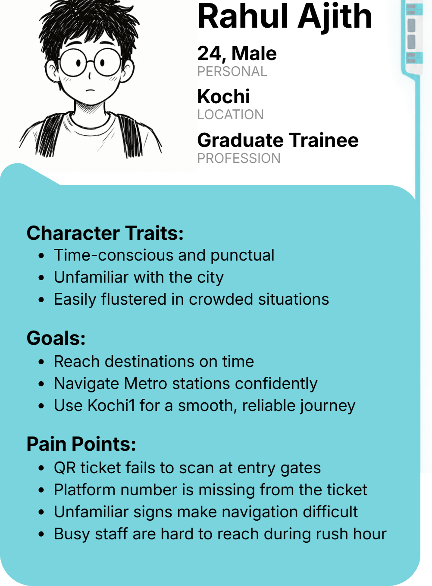
Empathy Map
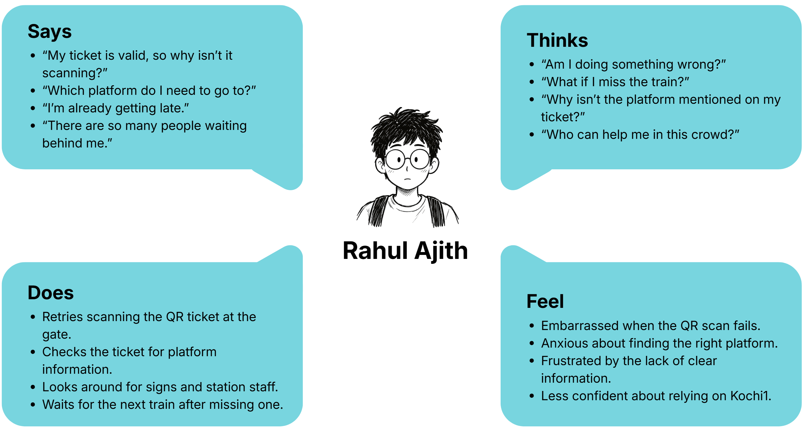
Anu Natan · 26, Marketing Executive
Scenario · The Water Metro Connection
Anu wants to take the Water Metro from High Court to Vypeen before catching a feeder bus to work. She opens Kochi1 to check boat departure times. The app buries boat timings beneath multiple obscure submenus, causing her to arrive at the terminal just as the boat pulls away.
Storyboard · Commute Journey
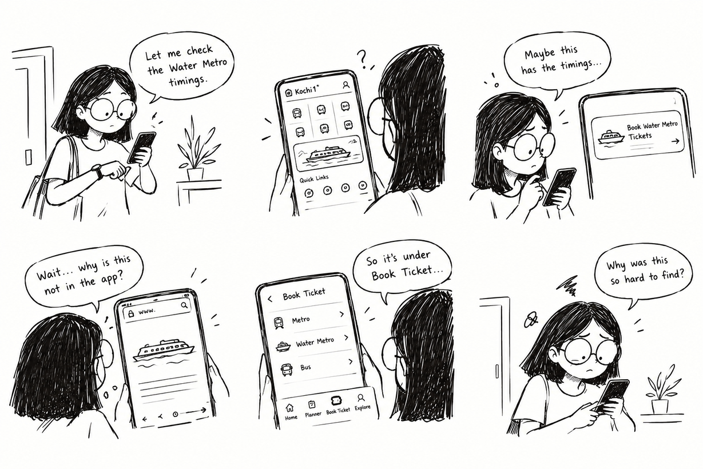
Persona Profile
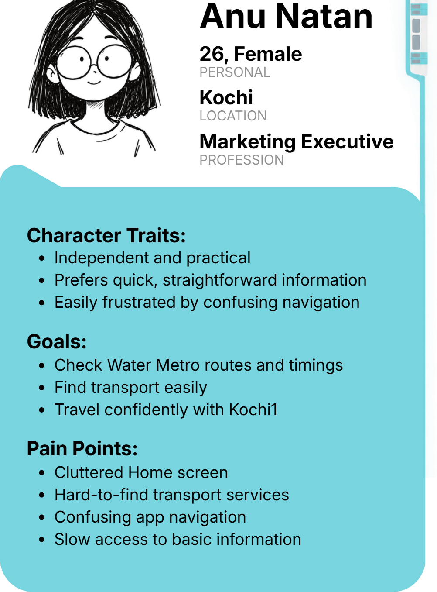
Empathy Map
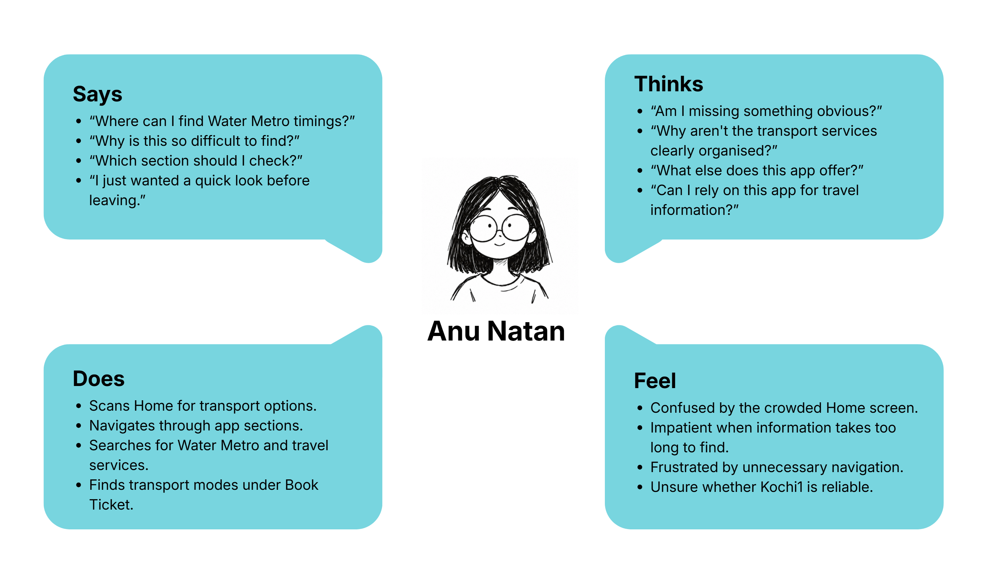
Meera Ram · 32, High School Teacher
Scenario · The Cross-City Medical Appointment
Meera needs to travel from Fort Kochi to Edappally for an important medical appointment. The navigation bar displays both “Planner” and “Book Tickets”, leaving her unsure which to select. The search results present Water Metro, Metro, and bus in a dense, visual bundle without transfer directions, increasing her anxiety.
Storyboard · Commute Journey
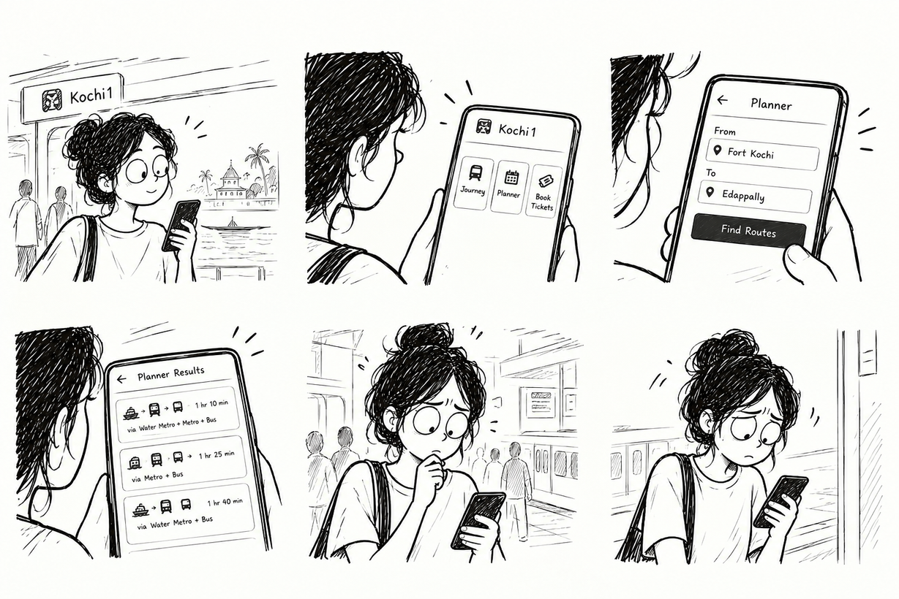
Persona Profile
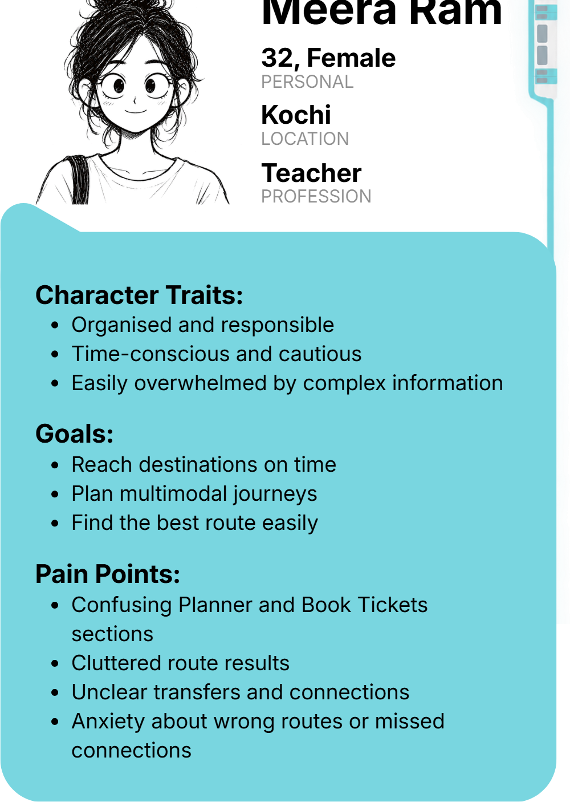
Empathy Map
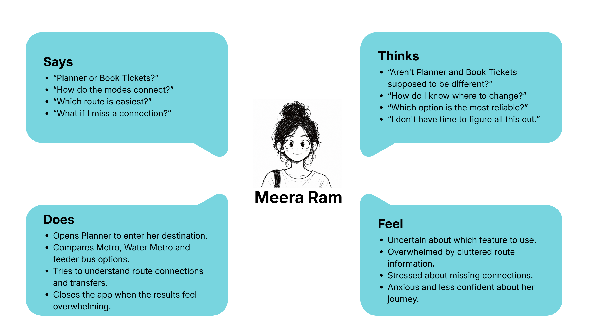
Information Architecture
Restructuring the Kochi1 transit ecosystem from a fragmented, multi-layer hierarchy into an intuitive multimodal pathway that unifies ticketing, navigation, and smart card management:
Existing Information Architecture
Multi-layered navigation with redundant menu tiers, overlapping planner routes, buried ticketing entryways, and fragmented card balance services.
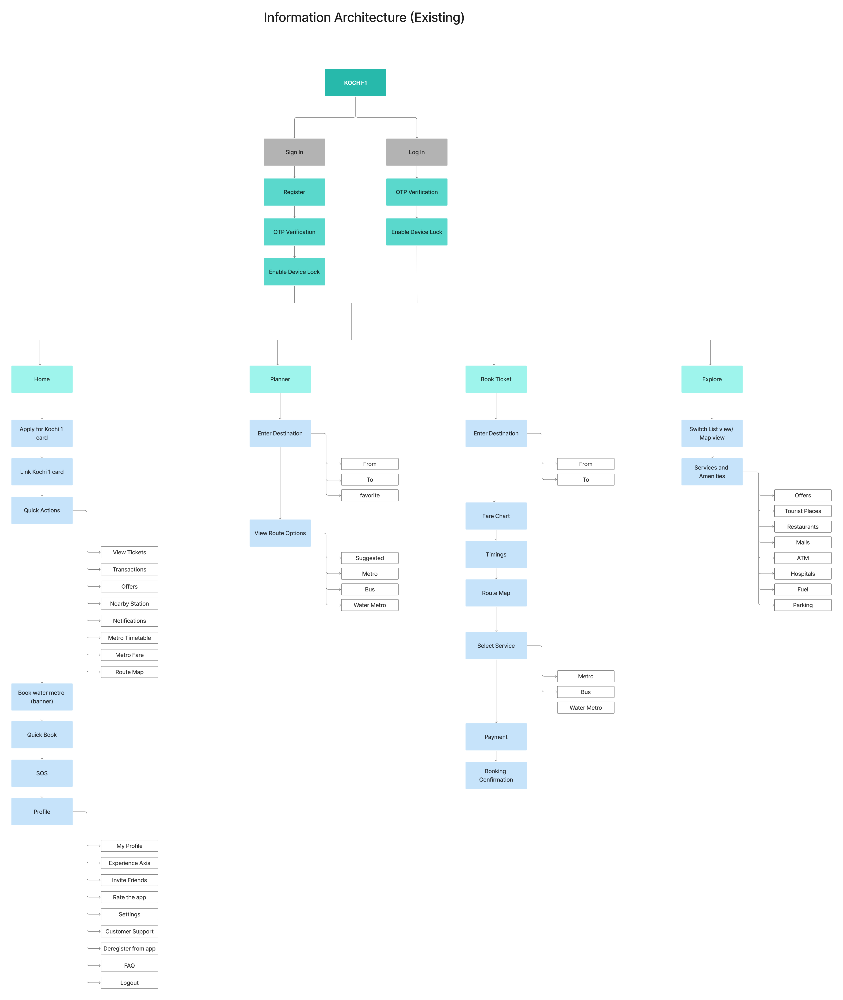
Redesigned Information Architecture
Streamlined hierarchy: unified multimodal ticketing, real-time timetable integration, direct one-tap card management, and transparent feeder bus/water metro pathways.

User Flows
Step-by-step task flows designed to eliminate friction across metro booking, multimodal transfers, and payment validation:
Quick QR Metro Ticket Booking
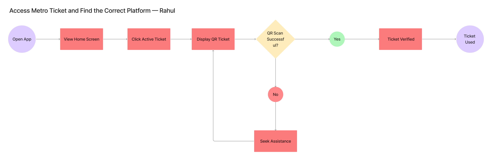
Multimodal Route Planning & Live Tracking
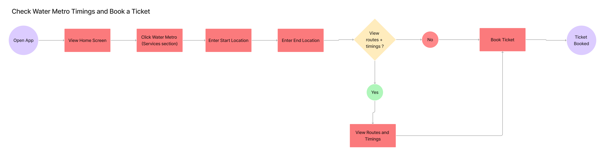
Smart Card Recharge & Instant Balance Check
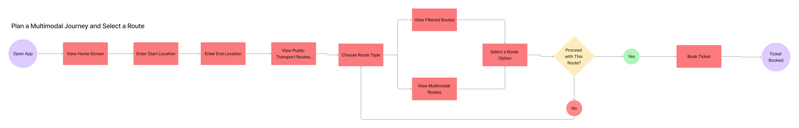
The screens are in the process of being designed.
Translating verified user insights, simplified information architecture, and core journey flows into refined, accessible high-fidelity interfaces for Kochi’s daily commuters.